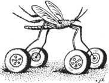

BITS & PIECES
Recapping and reselling tires is big business in the U.S., so much so that between 1970 and 1985 over 15 million used tires were imported from other countries to roll anew on American highways. But on their way here at least some of the tires provided a free ride for unwelcome passengers: specimens of Aedes albopictus, a species of mosquito from Asia that uses rain-filled tires for breeding. The insect is a carrier of dengue - an infectious tropical disease - and other viruses. Biologists studying A. albopictus say it seems to tolerate temperate conditions well, and could spread throughout much of North America.
Acid Ants
Much of the acidity in acid rain is formic acid. Researchers have long known that some of the formic acid is produced by chemical reactions in the atmosphere between certain pollutants such as formaldehyde and various hydrocarbons. But they were unsure how much is the result of human activity and how much is from natural sources. Now Tom Graedel, a researcher at AT&T Bell Laboratories, has discovered what he believes to be a source at least as significant as industrial emissions: ants. According to Graedel, formicine ants may account for as much as half of all atmospheric formic acid. Working with zoologists from Cornell University, Graedel multiplied the number of formicine ants in the world by the amount of formic acid each insect releases over its lifetime, and then used a time scale to calculate the amount of formic acid released per year by the planet's ants. The resulting figure: 2 X 10 13 grams - or about 22 million tons, which is roughly the same amount of formic acid produced in the atmosphere by man-made pollutants.
Speed Pollutes
At the same time that many states in the U.S. are raising highway speed limits, researchers in Sweden are finding that higher speeds mean more pollutants. In tests conducted by the National Swedish Environmental Protection Board, emissions of nitrogen oxides doubled when speeds increased from 50 kilometers per hour (about 30 mph) to 80 kilometers per hour (about 50 mph). The board found that reducing highway speeds by just 10 kilometers per hour, a little more than six miles per hour, would cut emissions by nearly 19%.
Bubbled Butter
Health-conscious consumers may someday be able to buy real butter that's virtually cholesterol-free, says a University of Wisconsin-Madison food scientist. Robert Bradley reports that when pure carbon dioxide is bubbled through butter, the resulting product looks and tastes just like the origina - but it contains 95070 less cholesterol. The process, called supercritical fluid extraction, also removes cholesterol from egg yolks, and is used to decaffeinate coffee.
Hazardous Household Waste Wheel
How can you safely dispose of used crank-case oil, old cans of paint, a cast-off jar of pesticide? Is that cleaning liquid you're using dangerous? You'll find good information on the handling, storing and disposing of 36 common hazardous household products on a new, easy-to-use information wheel published by the Environmental Hazardous Management Institute. The wheel not only includes sections on identifying hazardous ingredients and pinpointing their potential health and environmental effects, but also offers advice on proper usage and suggests safer alternatives. The Household Hazardous Waste Wheel is available for $3.75 postpaid from EHMI, P.O. Box 283, Portsmouth, NH 03801, 603/436-3950.
Eco Hot Line
Want the straight skinny on current legislation affecting the environment? Just call the National Wildlife Federation's new hot line; you'll get a taped message featuring an update on important issues, along with the names, addresses and phone numbers of key lawmakers. NWF's hot line number is 202/737-2024.
|
 |
|
|